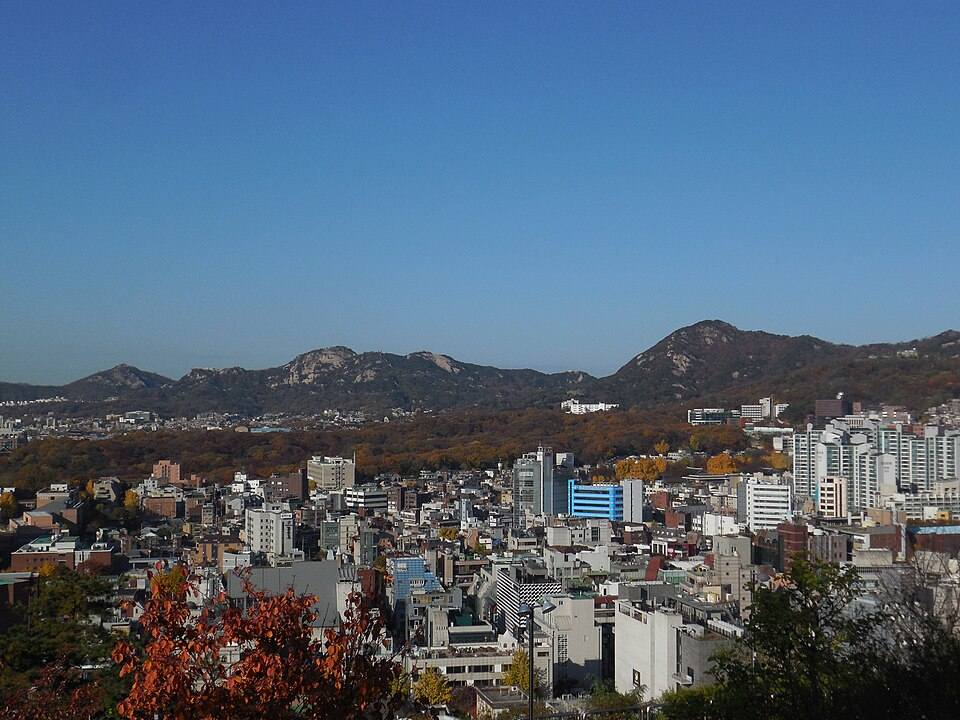

종로 검정고시 — 자퇴 직후 첫 세 달을 어떻게 쓰느냐

학교를 그만둔 직후가 가장 중요합니다. 이 시기를 어떻게 보내느냐에 따라 그다음 1년이 거의 결정됩니다. 그런데 많은 분들이 첫 주부터 하루 10시간 계획을 세우고, 2주쯤 지나 완전히 멈춥니다. 종로 검정고시를 자퇴 직후에 시작하실 때 세 달을 어떤 순서로 쓰면 되는지 정리했습니다.
첫 달: 공부보다 시간표를 먼저 세웁니다
학교를 다닐 때는 하루의 틀을 학교가 대신 잡아 줍니다. 그만두는 순간 그 틀이 통째로 사라지는데, 이걸 못 느끼는 분들이 많습니다. 첫 달에 공부량을 늘리는 것보다 중요한 건 일어나는 시간과 앉는 시간을 고정하는 일입니다.
이때 공부 시간은 적게 잡아도 괜찮습니다. 하루 두세 시간이라도 매일 같은 시각에 앉는 것이 목표입니다. 여기서 틀이 안 잡히면 뒤에 아무리 좋은 계획을 세워도 실행이 안 됩니다. 반대로 틀만 잡히면 공부량은 그 위에 얹기만 하면 됩니다.
둘째 달: 과목을 한꺼번에 벌이지 않습니다
검정고시 과목이 여러 개라고 해서 처음부터 전부 손대면 어느 것도 끝이 안 납니다. 둘째 달에는 두세 과목만 골라서 끝까지 한 바퀴를 돌리시는 게 좋습니다. 한 과목이라도 처음부터 끝까지 봤다는 경험이 생기면 나머지 과목의 속도가 달라집니다.
무엇부터 할지는 지금 상태에 따라 다릅니다. 기초가 많이 비어 있다면 영어와 수학처럼 쌓는 데 오래 걸리는 과목을 먼저 시작해 두는 게 유리합니다. 암기 비중이 큰 과목은 뒤에 붙여도 시간이 덜 듭니다.
셋째 달: 기출로 지금 위치를 확인합니다
세 달째에는 반드시 기출문제를 한 회분 풀어 보시길 권합니다. 아직 다 안 봤는데 푸는 게 맞나 싶으시겠지만, 기출은 실력을 재는 용도가 아니라 방향을 고치는 용도입니다. 어떤 유형이 반복되는지, 내가 어디서 막히는지가 한 번에 보입니다.
검정고시는 전 과목 평균 60점이면 합격입니다. 기출을 한 번 보고 나면 "어디까지 해야 되는지"가 구체적으로 잡히고, 막연한 불안이 할 일 목록으로 바뀝니다. 이 시점에 계획을 한 번 고쳐 쓰시면 남은 기간이 훨씬 또렷해집니다.
혼자 하는 게 어려우면 그게 정상입니다
자퇴 직후에 가장 힘든 건 공부 내용이 아니라 아무도 확인해 주지 않는 상태입니다. 학교에서는 안 하면 누군가 물어봤는데, 이제는 하루를 통째로 넘겨도 아무 일이 일어나지 않습니다. 의지가 약해서가 아니라 구조가 바뀐 탓입니다.
그래서 주 1~2회라도 약속된 시간에 누군가를 만나는 구조를 만들어 두는 게 중요합니다. 진도 점검이 되는 것도 있지만, 그 요일을 기준으로 한 주가 정리된다는 점이 더 큽니다.
종로에서 이렇게 함께합니다
저희는 1:1 맞춤 과외라 첫 수업에서 지금 하루가 어떻게 흘러가는지부터 확인하고, 거기서 가능한 시간표를 같이 짭니다. 과목은 한꺼번에 벌이지 않고 순서대로 붙입니다. 종로구와 혜화동·동숭동·명륜동·평창동·무악동 등 인근 지역은 방문 수업이 가능하고, 이동이 부담스러우시면 화상(줌) 수업으로 집에서 그대로 진행합니다.
관련 검색어: 종로검정고시 · 종로검정고시과외 · 종로구검정고시과외 · 종로자퇴생과외 · 서울종로검정고시